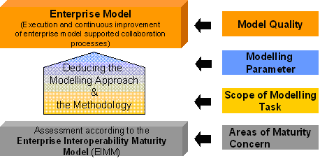
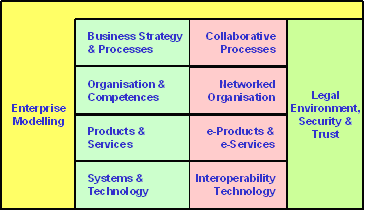
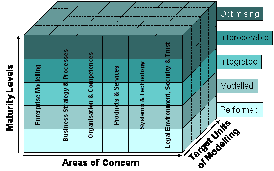
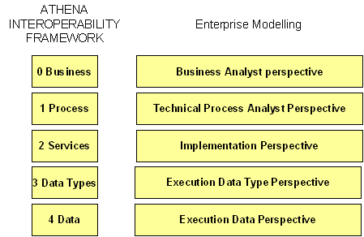
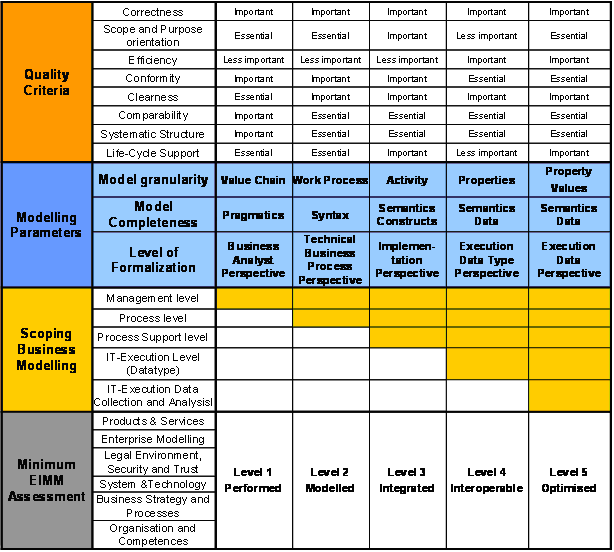
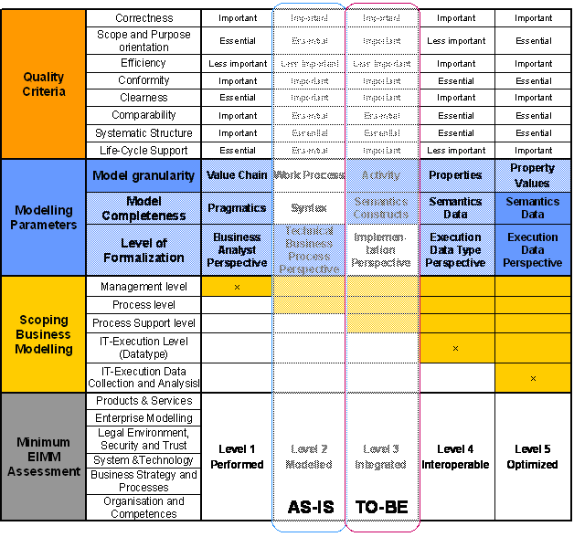

")

Enterprise interoperability maturity model (EIMM)
Introduction
To figure out deficits and gaps during operation leads to a serious risk related to the current business. ATHENA elaborated a maturity model and an application procedure to perform assessments for interoperability maturity.
The EIMM-based methodology step shall provide assistance in capturing the collaborative processes of the company with the support of one of several adequate modelling approaches. And further it shall support the selection of an adequate methodology into an enterprise model and establish this model in the company. Figure 38 gives a review on the whole framework [ATHENA A1 2005c]. In the following two subchapters the EIMM and the Deducing approach will be explained in more detail.

Solution - EIMM assessment
The following six Areas of Concern are captured in the assessment:
- Business Strategy and Processes. This Area of Concern covers the identification, specification, execution, improvement and alignment of business strategy and processes. For the purpose of interoperability, this includes and pursues the improvement of collaborative processes, for several units within the organization as well as for external entities.
- Organisation and Competences. This Area of Concern covers the identification, specification, enactment and improvement of the organizational structure, including the knowledge and skills of the identified players. For the purpose of interoperability, this includes the identification of external entities to collaborate with, the specification of the topology of a networked organization, and its deployment and improvement.
- Products and Services. This Area of Concern covers the identification, specification and design of the organisation’s products and services, its quality characteristics and the life-cycle strategy. For the purpose of interoperability, this includes the identification of new opportunities and specification of the same aspects for new products and services that make use of networked technologies for its delivery: e-Products and e-Services.
- Systems and Technology. This Area of Concern covers the identification, specification, design, construction/acquisition, operation, maintenance and improvement of enterprise systems. This includes the establishment of links and traceability to enterprise models, at best self-controlled. For the purpose of interoperability, this includes research and evolution of enterprise systems to apply innovative technologies that foster interoperability.
- Legal Environment, Security and Trust. This Area of Concern covers the identification of legal, security and trust requirements due to the collaboration with external entities, and the provision of solutions to manage these aspects which are a key for interoperability.
- Enterprise Modelling. All of the previously identified Areas of Concern are directly affected by aspects of an all embracing sixth Area of Concern. This Area of Concern covers the specification, construction, application and improvement of the enterprise models. This includes support activities such as the identification of appropriate meta-models and languages, methodologies, infrastructure, organization (people and skills), etc. for enterprise modelling. Additionally, it deals with the interoperability of enterprise models.

Using a five level maturity scale, the following maturity levels can be identified:
- Performed: Enterprise modelling and collaboration is done, but in an ad-hoc and chaotic manner. The organization collaborates with external entities (suppliers, administration, customers), but the relationships are not planned thoughtfully. Collaborative tasks and processes usually exceed budget and schedule, their past success (usually based on the people) cannot be repeated, and the potential of the technology is not used properly.
- Modelled: Enterprise modelling and collaboration is done in a similar way each time, the technique has been found applicable. Defined meta-models and approaches are applied, responsibilities are defined, people understand the enterprise model and know how to execute it, and network technologies are used to collaborate.
- Integrated: The enterprise modelling process has been formally documented, communicated and is consistently in use. The organisation uses a defined methodology and infrastructure for enterprise modelling, the different dimensions are integrated among themselves and the model is traceable to the enterprise systems, there is a knowledge base used to improve the models, and business collaboration is facilitated through interoperability technologies, use of standards, and externalisation of part of the enterprise models.
- Interoperable: Enterprise models support dynamic interoperability and adaptation to changes and evolution of external entities. The workplaces of the people are seamlessly adapted to the enterprise model. Results (for organizations and persons involved) and process metrics are defined as a basis for continuous improvement.
- Optimising: Enterprise models allow the organisation to react and adapt to changes in the business environment in an agile, flexible and responsive manner. Enterprise systems are systematically traced to enterprise models and innovative technologies are continuously researched and applied to improve interoperability. The use of enterprise modelling can contribute to reach the overall goals of the organization, unit, or persons involved.
The EIMM defined as a set of Areas of Concern and a set of maturity levels provides the means to determine the current ability of an enterprise to collaborate with external entities and to specify the path to improve this ability. It provides an organisational context for more specific and technical improvements. As a third dimension, the EIMM takes into account the targeted organisational units for which a maturity level needs to be assessed, or which need to be improved, in order to achieve a certain maturity level.

Each Area of Concern will be defined by a set of goals and objectives related to interoperability and collaboration issues. The level of interoperability and collaboration maturity for each Area of Concern will be defined by the presence or absence of maturity indicators. These are typical practices and work-documents, which have to be in place to achieve a determined maturity level. The specific goals and objectives of each Area of Concern, together with their indicators are described in the next section. In order to achieve a certain maturity level, each of the indicators needs to fulfil the threshold values or states that are specified for the respective maturity level. At the same time they illustrate the To-Be status that has to be realized if a company wants to reach the next maturity level.
Solution modelling concept derivation
The impact and the benefit of the above described criteria to Interoperability requirements can be shown, if they were mapped to the different levels of the AIF. This mapping of the criteria to the AIF gives the assessment structure and the related procedure a new tool to differentiate and to weight the interoperability requirements for Enterprise Models. In the next three subchapters the Interoperability levels and the quality criteria and the mapping with the EIMM levels will be introduced.
Modelling levels mapped to the AIF
The ATHENA Interoperability Reference Architecture as described in Figure 9 is now mapped with modelling levels in terms of formalisation. This is one key aspect in order to find the right modelling concept. This implies the following mapping items (see figure below):
- Technical Process Analyst Perspective: Collaborations on this level are characterized by the attempt of the partners to align their process with each other. The detailed business logic and the requirements for IT – Support to enable interoperability between business partners can be assessed in this level.
- In the third level the Implementation Perspective allows the invocation of existing services automatically. Collaboration can now take place on IT system level by using certain interaction protocols.
- The lowest level of granularity in performing design time modelling is represented by the Data Perspective were data formats and semantics are clarified in order to allow collaboration support with approved data and formats.
- The lowest level in terms of interoperability run-time perspective is represented by the Execution Data Perspective, were values of properties are consistent and comparable.

Quality criteria for enterprise modelling regarding interoperability
Quality Criteria for Enterprise Modelling regarding interoperability are derived from “Principles of methodical modelling” [Becker, et al. 1995, ISO 1998] and concepts and rules for Enterprise Models [Jochem 2001]. These basic criteria are extended and adapted regarding interoperability:
- Correctness: An Enterprise Model is correct, if real world elements are correctly represented in the model. It means syntactically (complete and consistent related to the Meta-Model) and semantically (structural, hierarchical and behavioural constancy related to the elements of the real world) correct.
- Scope and Purpose orientation: An Enterprise Model is scope and purpose oriented, if it represents only these parts of the real world which are intended by the goals, the scope and the purpose of the modeller.
- Efficiency: An Enterprise Model is efficient, if the creation effort is low, but the benefit regarding the intended goals, scope and purpose is high. It is also efficient when the usage duration of the model is long and itself or parts of it are reusable for other goals, scopes and purposes.
- Conformity: An Enterprise Model is conform, if it fulfils specific modelling language requirements, follows specific (design) rules, fulfils/covers standards, covers specific boundary conditions.
- Clearness: An Enterprise Model is “clear”, if on one side a common well known terminology based on an application-oriented ontology is used and on the other side it is readable based on a structured layout. This criterion depends on the model user and also on the modelling method/language which is used.
- Comparability: An Enterprise Model is comparable, if it fits into a common framework, uses defined levels of abstraction and a granularity based on defined scope, goals and purpose. Comparability is influenced by the use of common patterns, the grade of formalisation and the correct usage of modelling method/language.
- Systematic Structure: An Enterprise Model has a systematic structure, if it fits into a common framework, uses common pattern, was build with consistent, systematic applied design rules and supports the concepts of views to integrate models developed from different views.
- Life-Cycle Support: An Enterprise Model supports the Enterprise Life-Cycle, if it allows feeding model information forward and backward in life-cycle activities and represents recursion and iteration mechanisms. Different life-cycle phases may have different models. It enables value-added iteration of enterprise processes that improves product quality.
Mapping
In. the mapping between the introduced parameters is shown: Scoping Business Modelling (which are the leading parameters), Modelling parameters, required minimum EIMM Assessment result and importance of the Modelling Quality parameters.

The AIF Reference Architecture levels are represented as Level of Formalisation from Business Analyst perspective to Execution Data perspective. Based on the “Business Scope” the right modelling parameters can be derived in order to define an appropriate model (see mark “X” to each level). As well the required EIMM level is indicated in the same metric. In the case that an EIMM level is not achieved for a distinct modelling task, activities for the improvement of interoperability capabilities can be identified by a simple analysis of the current maturity profile. The quality parameter which represents the outcome of the modelling task has a different behaviour. The requirements level of each parameter is increasing from left to right. So for instance becomes the “Clearness” in the Execution Data Perspective the mark important whilst in the other levels it is essential.
Application guide
In the following two subchapters the application for applying the EIMM and to perform the deducing approach will be figured out.
Application guide for EIMM
In the following the steps for performing the assessment are figured out.
First: The situation of the company has to be clarified:
- Assessment is important for the reputation to the business community – here an independent assessor from outside is necessary. For an outside person the major specific keys for the business and the situation of the company has to be identified and if necessary the impact for interoperability has to be clarified
- Internal assessment for improving the capability or deducing mainly the right modelling approach – the evaluation of the assessment should be done by an independent person inside the company
Second: A self assessment of each unit which is responsible for a certain item has to be performed. Here both a member of the management and a staff member have to fulfil the questionnaire independently. Especially for function oriented organisations (Sales, production planning, Production etc.) a distribution in bigger companies is recommended. In smaller companies the ORG/IT Department should be able to fulfil the questionnaire. In the following a reference proposal should help to distribute.
- Product /Service Development
- Production Planning
- Production
- Sales
- Purchasing
- HR
- Org/IT
- CEO level
The responsible organisational unit is normally marked with “x”. There are some alternatives for distributing. In this case an “a” means that the ticked organisational unit can answer as an alternative. Sometimes if one organisational unit is not able to have the respected knowledge (e.g. Org/IT) more than one organisational units should in parallel “mandatory” answer. This is marked with “m” (see example in the table below).
|
Nr. |
Question name |
Organisational Unit |
|||||||
|
|
|
Product/ Service Development |
Production Planning |
Production Engineering |
Sales |
Purchasing |
HR |
ORG/IT |
CEO level |
|
EM1 |
Bill of Material |
x |
|
|
|
|
|
a |
|
|
EM2 |
Product variants |
x |
|
|
|
|
|
a |
|
|
EM3 |
Structure |
x |
|
|
|
|
|
a |
|
|
EM4 |
Service Processes |
|
|
|
|
|
|
x |
|
|
EM5 |
Others |
|
|
|
|
|
|
x |
|
|
EM6 |
Strategic processes (like governance) |
|
|
|
|
|
|
x |
|
Third: After the self assessment the independent person should analyse the fulfilled questionnaires in order to identify discrepancies. During the external audit these discrepancies as well between management and staff have to be moderated and verified by using operational data or reference documents. Depending on the size of the company more than one auditor may have to assess.
Fourth: The independent person has to perform the entire calculation and to organise a final evaluation meeting at least with the management in order to clarify the rating and to give recommendations for the entire company.
Application for the mapping
Based on the Scope elaborated by using the Business Interoperability Framework and the current maturity Level of Interoperability the to-Be and the As-Is columns can be derived. The level of formalization is the channel for all other modelling concept aspects like completeness, granularity and quality. These aspects will guide the modelling as well the derivation of interoperability requirements.

In the next subchapter the modelling concept will be used to perform interoperability analysis by annotating requirements based on enterprise models.